Next: Overall transfer rates
Up: Results
Previous: Grid independence
Contents
Postprocessing
The solution variables are not always those most suitable for presentation,
and they may not be the ones of interest.
The velocity vector plot
(fig. 5.4a), for example, is very cluttered. The
temperature contour plot (fig. 5.4b) suggests that the
heat transfer is practically one-dimensional throughout much of the
height of the cavity, with deviations only near the horizontal surfaces.
It is difficult, though, to quantify this from the figure.
The flow field is more readily envisaged with stream-lines. These are
easily generated in Fasttalk (CSIRO 1997, p. 121) and are
plotted in figure 5.5(a).
The question of whether or not the
Figure 5.5:
Processed solution variables from the same run as figure
5.4: (a) stream-function, with contours at
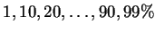; (b) temperature discrepancy, 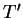, with
contours at 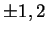 and 5%, with signs as shown.
| 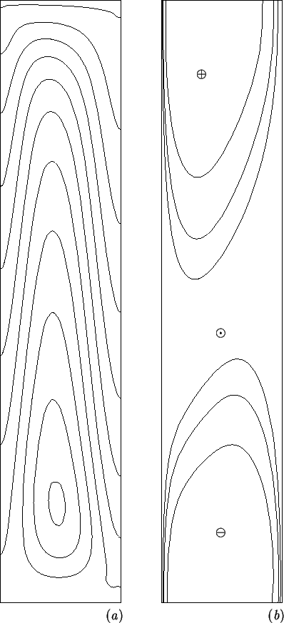 |
temperature profiles are fully developed is easily answered by
subtracting the finite element solution
from the analytic solution, for a cavity of infinite vertical aspect ratio,
equation (4.26),
and contouring the result, .
Figure 5.5(b) clearly displays the range of
influence of the horizontal surfaces into the cavity core.
This question is taken up in more detail in §5.5.
Further insight into the energy transfer can be obtained from vector
plots of each of the component energy fluxes, defined by
(2.48)-(2.51). It must be noted that this separation of
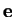 into its component parts is not unique, since it suffers
from the same arbitrariness (an additive constant without physical
significance) as the thermodynamic internal
energy (Guggenheim 1959, p. 11).
The present choice is convenient as
it means that both the advective,
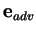 (2.49),
and interdiffusive,
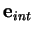 (2.50),
fluxes vanish at the left wall, since these
are proportional to the reduced temperature,  .
This simplifies calculation of the overall energy transfer rate, which thus
can be accomplished by integrating just the conduction,
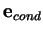
(2.48), and latent,
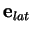 (2.51), parts
over the cold wall. Alternatively, the total
energy flux can be integrated over the domain.
The conductive, advective and interdiffusive
fluxes are plotted in figure 5.6.
.
This simplifies calculation of the overall energy transfer rate, which thus
can be accomplished by integrating just the conduction,
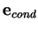
(2.48), and latent,
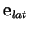 (2.51), parts
over the cold wall. Alternatively, the total
energy flux can be integrated over the domain.
The conductive, advective and interdiffusive
fluxes are plotted in figure 5.6.
Figure 5.6:
Energy flux components: (a) conduction,
;
(b) bulk advection,
;
and (c) interdiffusion,
.
Arrows scaled to the maximum magnitude of each component.
| 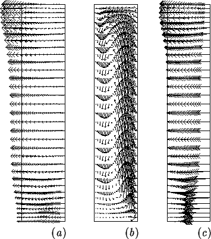 |
The component fluxes,
,
and
,
unlike their sum, , are not solenoidal. Figure
5.6 shows how the energy is transported into the cavity from
the right wall by advection and interdiffusion, how these fluxes are
converted to the conduction flux, and finally how energy is conducted out
of the cavity into the left wall. The arrows in
figure 5.6(c) which seem to be leaving the cavity in
fact are not; this is another example of the cluttered nature of vector plots
which is treated by the `heat-lines' introduced below.
The total energy flux is obtained from the component fluxes and
(2.47) and is plotted in figure 5.7(a).
Figure 5.7:
Energy transfer in the cavity: (a) energy flux vector, ,
and (b) `heat-lines'.
| 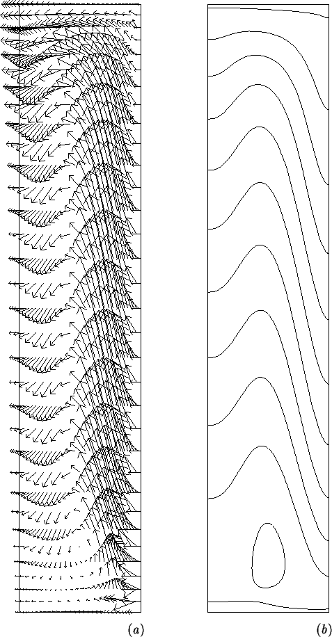 |
Since the energy flux vector, , like the velocity,
 , is plane and solenoidal, a `heat-function' can be formed
by analogy with the stream-function (Trevisan & Bejan
1987), and is easily implemented in Fasttalk.
In fact, the same Fastflo `problem' can be used for the
stream-function as the heat-function; it is merely a matter of passing
either the velocity field, , or the energy flux field,
. The heat-lines, the contours of the heat-function
(fig. 5.7b), show the paths that energy follows
through the cavity, though it is affected by the arbitrariness of the
energy flux vector. Since an equal amount of energy flows between
each of the heat-lines, it is clear from
figure 5.7(b) that the local flux through the
left wall is strongest nearer the top, and decreases down the wall.
This comes about because hot vapour-rich air is convected across the
top of the cavity by the counterclockwise rotating cell visible in the
stream-line plot (fig. 5.5a).
, is plane and solenoidal, a `heat-function' can be formed
by analogy with the stream-function (Trevisan & Bejan
1987), and is easily implemented in Fasttalk.
In fact, the same Fastflo `problem' can be used for the
stream-function as the heat-function; it is merely a matter of passing
either the velocity field, , or the energy flux field,
. The heat-lines, the contours of the heat-function
(fig. 5.7b), show the paths that energy follows
through the cavity, though it is affected by the arbitrariness of the
energy flux vector. Since an equal amount of energy flows between
each of the heat-lines, it is clear from
figure 5.7(b) that the local flux through the
left wall is strongest nearer the top, and decreases down the wall.
This comes about because hot vapour-rich air is convected across the
top of the cavity by the counterclockwise rotating cell visible in the
stream-line plot (fig. 5.5a).
Next: Overall transfer rates
Up: Results
Previous: Grid independence
Contents
Geordie McBain
2001-01-27